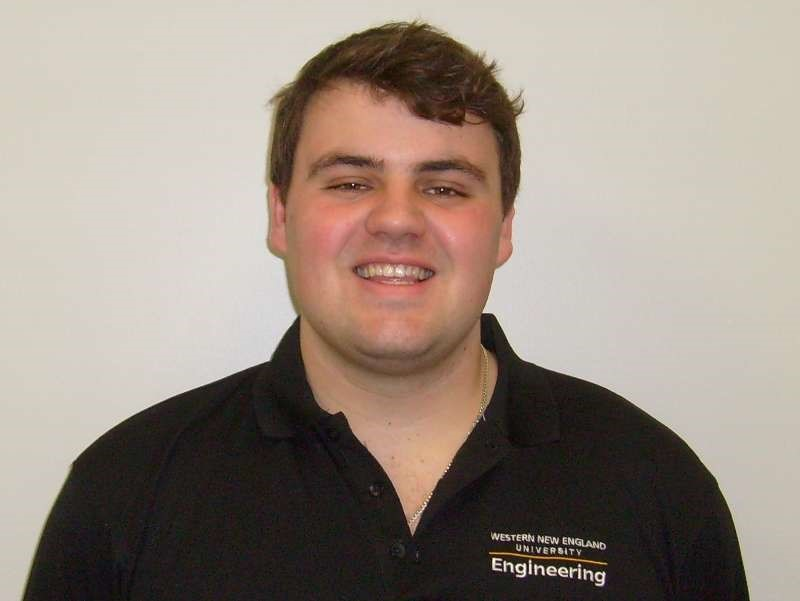
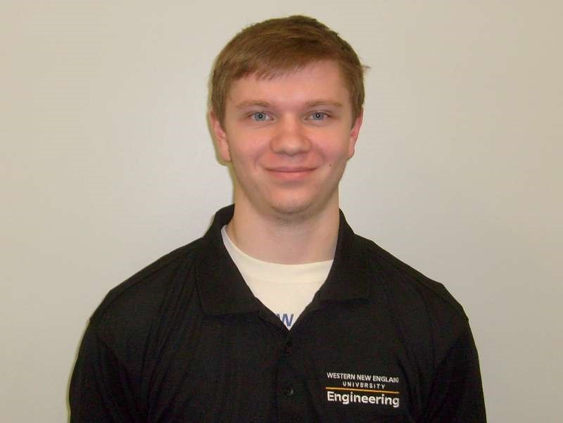
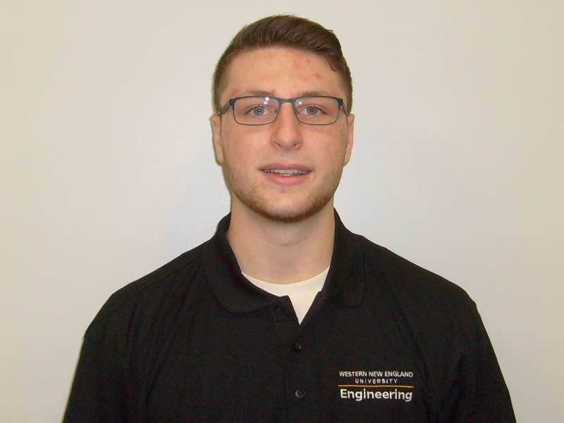
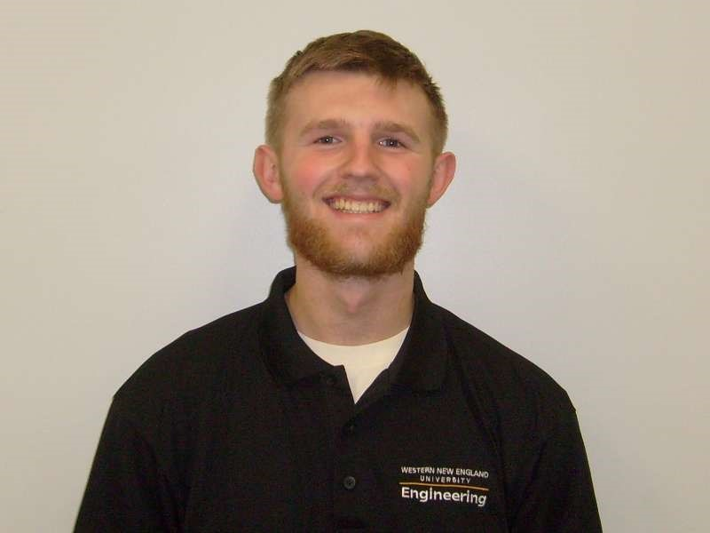
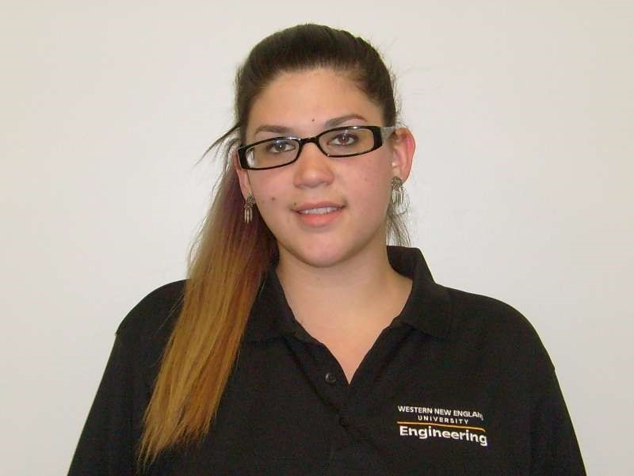
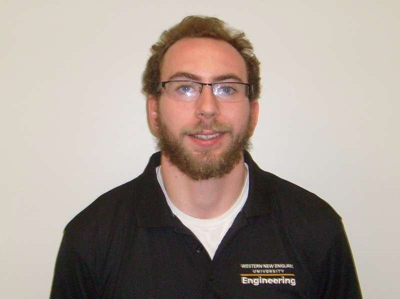

MEET THE TEAM
About the WNE Students
John

My name is Johnnie I like long walks on the beach and eating good food. I’m an Eagles Scout studying Civil and Environmental Engineering at Western New England University in hopes to work with water and air purification. Im Vice President of ASCE and a Student Representative for Student senate. I am also a resident advisor for freshman and an active participant in my university’s steel bridge competition. I don’t have much free time, but when I do you can find my in the weight room or kicking back with my friends.
Mathew
Hi, my name’s Matt Boucher and I am a junior at Western New England University. I am an International Studies major with minors in International Business and Political Science. As a student I have keen interests in history, politics, and international relations. I am incredibly excited to spend the summer in China, experiencing a different culture. I am the health and safety manager.
Brion
Hi, my name is Brion Dufek, I’m a Civil Engineering major at Western New England with a concentration in reservoir engineering. During my time at Western New England I have kept active by being a part of multiple intramural sports teams, I also recently joined the American Society of Civil Engineering (ASCE). As a part of the Solar Decathlon Team I have helped put together the greywater designs for our house. I am excited to be a part of the team and can’t wait to get there.
Geoffrey
Hi, my name is Geoffrey Circosta I am responsible for the marketing of the house. I am a sophomore at Western New England University and my major is Civil engineering. I am a commuter and spend most of my free time working. I work at a golf course, golf is my passion as well as fishing, and I am very excited to spend my summer abroad in China.
Jason
I'm a Civil Engineering student with hopes to help improve our infrastructure. In addition to being a part of the Solar Decathlon team, I play defense for the WNE Men's Lacrosse team and am a member of the Steel Bridge Club. In my free time I love snowboarding and spending time with my friends and family. It has been a dream of mine to see other countries and their cultures around the world, so an experience like this is an opportunity I simply couldn't pass up!
Michelle
I am a nontraditional student as I am older than the average college student. After high school I travelled the US doing non-profit work which consisted of disaster relief, community development, construction, environmental sustainability and more. I then worked for a few different contractors and have volunteered with Habitat for Humanity for many years. I am currently finishing up my junior year in Civil Engineering at WNEU. I work for Holyoke Community College as a STEM Ambassador where I create and run mentoring and outreach programs for science, technology, engineering, and mathematics majors. I am a collegiate member of The Society of Women Engineers and I consider myself to be an advocate for women and minorities in STEM.
Lee
Hello I’m Lee Peringer. I am a junior at Western New England University. I am majoring in civil and environmental engineering with a concentration in reservoir engineering. I am also part of the WNE Steel Bridge team and I conduct nanoparticle emulsion research for oil reservoirs. I am very excited to visit China and compete in Solar Decathlon.
Dr. Kenneth Lee

Dr. Kenneth Lee is a fulltime professor and the Founding Chair of the Civil and Environmental Engineering Department at Western New England University located in Springfield, Massachusetts, USA. Dr. Lee received all his engineering degrees (BS, MS, and Ph.D.) from the University of California at Irvine and he is a registered professional engineer (P.E.) in the State of Ohio. Dr. Lee has postdoctoral experience from Princeton University and has taught at several universities including Rutgers University and University of Massachusetts Lowell. Dr. Lee has over 100 publications and his primary research interests are in the environmental and water resources areas. Solar Decathlon China 2018 will be Dr. Lee’s third Solar Decathlon competition, with previous participations in Solar Decathlon USA and Solar Decathlon Latin America & Caribbean competitions.